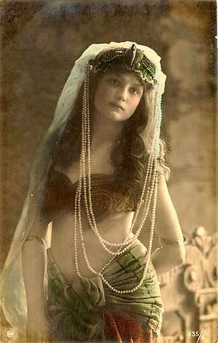
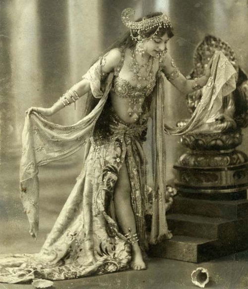

Buikdans komt van de Franse benaming 'Dans du Ventre', vermoedelijk doordat de buik zichtbaar is waardoor het accent op de buik kwam te liggen. Toch is niet iedere beoefenaar het met deze benaming eens, en velen prefereren de benaming: oriëntaalse dans. Linguïstisch gezien is deze term meer correct, daar haar afkomst en diversiteit zich beter tot uitdrukking laten komen. Hoewel de term 'buikdans' niet door iedereen wordt geliefd, toch is het de noemer waarmee zij bij het volk bekend is geraakt.
De eerste 'buikdansroots' zijn terug te vinden in het Midden-Oosten en Azi�, waaruit is gebleken dat onze dans meer dan 6000 jaar terug gaat. Van origine was onze buikdans een sacrale dans, een getuigenis aan wat we god noemen alsmede een vruchtbaarheidsdans en geboortedans.
Door het soepel houden van het bekkengebied en spiertoning van het gehele middenrif, kon de vrouw golvende bewegingen met haar buik maken, zodat uitdrijving van de baby werd versoepeld. Er zijn verhalen over waar de aanstaande moeder boven een bed van varens danste totdat ze in trance raakte en net zo lang doordanste tot de baby geboren werd. De andere aanwezige vrouwen van de tribe assisteerde de vrouw hierin door haar aan te sporen, met klanken en dans te motiveren en te steunen. Een andere variant van deze dans is bekend als tempeldans: een eerbetoon aan de goden en godinnen van die tijd. Dans kent van origine een sacrale toepassing. Men wist dat door te dansen men een bepaalde stemming kon verkrijgen, waardoor communicatie met het heilige tot stand kon komen.
Nadat het patriarchaat zijn intrede had gedaan en mannen ineens met de scepter zwaaiden, werden deze dansen verboden. In tijden van kolonisatie werd deze goddelijke praktijk tot een vorm van amusement gedegradeerd. Alhoewel buikdans wordt verondersteld uit heidense vruchtbaarheidsrituelen te zijn geëvolueerd, is het algemeen gedacht dat de nomadische stammen verantwoordelijk zijn voor de verspreiding vanuit uit India naar Afghanistan en Perzi�, en via deze route naar Turkije, Egypte, Noord-Afrika en Europa. Deze route is bekend onder de naam zijderoute, of Silk Road.
In de 18e eeuw ontdekten soldaten deze 'schandalige' dans, en konden hun ogen niet afhouden van de 'onzedelijke' bewegingen van verleidelijke heupen en schouders van de danseressen. Ze werden hierdoor zelfs zo gefascineerd dat sommige danseressen naar Europa werden gehaald, om voor onze nobelen te dansen. De dans kwam hiermee in bekendheid, waardoor ook westerse vrouwen zich niet schroomden om zich aan deze dans te wagen. Onze eigen conservatieve en vrij stijve stijl van dansen werd ineens aangevuld met golvende en trillende bewegingen en �heel belangrijk- het eigen plezier van de danseres. Het leek wel alsof bezieling en leven bezit namen van de dans!
Van hieruit ontwikkelde de orientaalse dans zich tot een dans die met name gericht was op amusement en entertainment. Van een tribale en folkloristische dans, werd zij ingelijfd tot een dans bestemd als toegankelijk voor publiek. Hieruit ontstond het cabaret dansen, zoals te vinden in bijv. de Moulin Rouge in Parijs.
Er zijn verschillende bekendheden uit alle hoeken van de wereld, die deze dans gemaakt hebben tot de dans die we vandaag kennen, zoals Mata Hari, Samia Gamal, Jamila Salimpour, en vele andere visionaire danseressen. Heden ten dagen kennen we nog een scala aan stromingen binnen de buikdans. Er bestaan oriëntaalse stromingen, klassieke stromingen en fusion stromingen. Ieder van deze stromingen vertakt zich weer in andere cross' fusion stijlen. Neem als voorbeeld de tribal fusion: zij kent invloeden uit yoga, ballet, cabaret en oriëntaalse dans. Verder ziet men in de fusion stijlen allerhande uiteenlopende combinaties van burlesque, flamenco, bollywood, moderne dans etc. terug. De buikdans die we heden ten dagen kennen is ongekend rijk aan repertoire en historie, en is voor iedere creatieve geest toegankelijk, en interpreteerbaar.
Bijna alle stromingen binnen de buikdans kennen een gelijke basis, met inbegrip of weglating van specifieke elementen. Bij de gechoreografeerde vorm van buikdans komt er meer techniek kijken dan bij improvisatie. Verschillende stromingen zetten ieder hun eigen klemtoon op hun stijl. Toch zijn er meer overeenkomsten te vinden dan verschillen. In iedere stroming komen shimmies, achtjes, ronde en golvende bewegingen -als wel staccato bewegingen- voor, met een nadruk op isolatie. Wanneer de basis voor buikdans gelegd is kan met verder experimenten met alle vormen die de rijke buikdanswereld kent.
